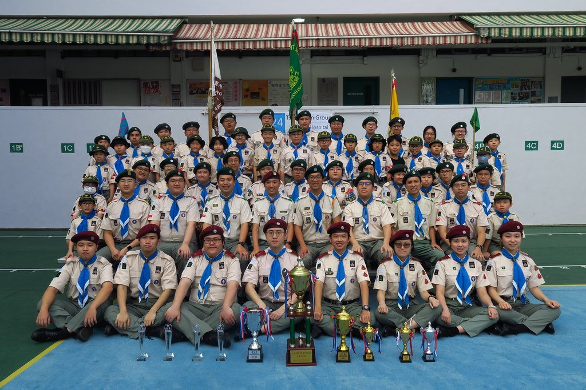

荃灣第二十四旅
Scouting for Fun
我們是仁濟醫院林百欣中學的屬校旅團，1984 年創立。星期六在學校集會，用廣東話，四個支部一齊行。
- 邊個：香港童軍總會 · 新界地域 · 荃灣區 · 24TWG
- 信咩：誓詞與規律、玩得開心、學到嘢，也為人為社區做事
- 點唔同：幼童軍到樂行齊全；會遠足露營、比賽服務；也安排一同溫習；足跡遠至富士山、馬來西亞和大露營

參加與集會 · 一眼睇晒
想加入先對年齡，再填申請表。集會在林百欣中學，由荃威花園或荃灣中心步行約五分鐘。
幼童軍
6–11 歲
星期六 15:00–17:00
童軍
11–15 歲
星期六 14:00–17:00
深資童軍
15–20 歲
星期六 14:00–17:00
樂行童軍
18–25 歲
每月一次
- 地點
- 新界荃灣荃景圍 145–165 號
仁濟醫院林百欣中學 - 語言
- 廣東話集會
- 點申請
- 填本旅申請表，等候旅團聯絡
社群海報精選
中秋、新春、聖誕、大會操、比賽報捷……Instagram 海報已搬上站，唔使淨係留喺 IG。
2026 童軍成員招募
來自本旅 Instagram 招募帖。想孩子放下手機、走向戶外、學獨立同交朋友——歡迎 6 歲以上加入。
- 卓越成就：成員考取金紫荊、總領袖、榮譽童軍等最高獎章
- 環球視野：日本、英國、德國、瑞典、台灣、馬來西亞等交流
- 多元體驗：露營定向、社區服務、急救、繩結與先鋒工程
宣誓禮・隊長晉升
2024 年 2 月 3 日戶外集會：列隊、宣誓與隊長晉升現場短片。
比賽成績
名次同現場相片一齊睇。撳相簿可到 Flickr 睇返當日情況。
四個支部

本旅特色


為何參加
- 星期六下午在林百欣中學，四個年齡都收新成員。
- 集會以廣東話進行。領袖有男有女，分屬四個支部。
- 幼童軍現時會學綁鞋帶和簡單紀律。童軍現時會學摺衫，以及在外宿營時怎樣尊重他人。
- 本旅現時會安排成員一同溫習。
- 活動包括遠足、露營、先鋒工程、歷奇和水上活動，也會用無人機、定位和飛行儀表。也曾到富士山、馬來西亞交流，並參加英國、瑞典和日本的世界童軍大露營。
- 服務包括仁濟籌務、渣打馬拉松和學校活動。

聯絡我們
新界荃灣荃景圍 145–165 號 仁濟醫院林百欣中學
info@24twg.org